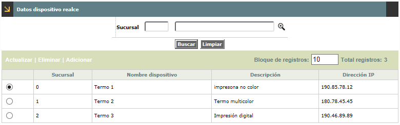
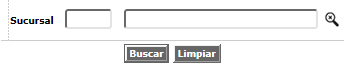
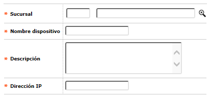
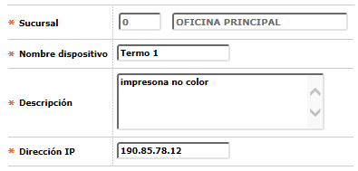

Relación Termo-impresora por Sucursal |
Mediante esta función se habilita la consulta y mantenimiento de una tabla en la cual se almacenan los dispositivos de termo-impresión para el realce asignados a cada una de las sucursales.

Filtro: El formulario cuenta con un filtro inicial de búsqueda, con los cuales se podrá realizar la consulta a través del campo sucursal:

El formulaio muestra las opciones Actualizar, Eliminar y Adicionar.
Adicionar: Si el usuario invoca la opción Adicionar se despliega un formulario con los siguientes campos.

Descripción de campos
Sucursal |
Campo con lista de valores poblada a través de la opción Estructura orgánica de la que debe seleccionarse cada una de las oficinas que hacen parte de la entidad. |
Nombre de dispositivo |
Campo alfanumérico que permite ingresar el nombre otorgado del dispositivo por la entidad a la termo impresora. |
Descripción |
En este campo alfanumérico de 30 posiciones, obligatorio, se ingresa el nombre o breve descriptivo al proceso de impresión. |
Dirección IP |
Campo que numerico que indica la direccion del dispositivo termo impresora dentro de la red. |
Actualizar: Si el usuario invoca la opción Actualizar se despliega un nuevo formulario en los siguientes campos modificable es: Nombre del dispositivo, Descripción y dirección IP.
